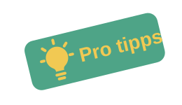

Erleben Sie Athen aus einer neuen Perspektive
Athen entdecken: Kultur, Kulinarik und unvergessliche Erlebnisse
Athen ist nicht nur eine Stadt voller Geschichte, sondern auch ein lebendiger Ort mit moderner Atmosphäre und zahlreichen Freizeitmöglichkeiten. Zwischen historischen Sehenswürdigkeiten, belebten Straßen und traditionellen Restaurants können Besucher das echte Leben der Stadt kennenlernen. Dieser Beitrag zeigt, wie vielseitig Athen ist und warum sich ein Besuch jederzeit lohnt.
Athen ist eine Stadt, die Geschichte und modernes Leben auf einzigartige Weise verbindet. Von der berühmten Akropolis bis zu den lebhaften Straßen der Altstadt gibt es zahlreiche Orte zu entdecken. Besucher können durch historische Viertel spazieren, beeindruckende Bauwerke bestaunen und gleichzeitig das mediterrane Lebensgefühl genießen. Die Stadt bietet eine perfekte Mischung aus Kultur, Tradition und moderner Atmosphäre.
Ein Besuch in Athen ist ein besonderes Erlebnis für Reisende jeden Alters. Neben den bekannten Sehenswürdigkeiten gibt es viele Möglichkeiten, die Stadt aktiv zu erkunden und neue Eindrücke zu sammeln. Ob ein Spaziergang durch die engen Gassen, ein Essen in einer traditionellen Taverne oder ein Blick über die Stadt bei Sonnenuntergang – Athen hinterlässt bei jedem Besucher bleibende Erinnerungen.
Praktische Tipps für einen angenehmen Aufenthalt in Athen: Dejan
- Besuchen Sie die wichtigsten Sehenswürdigkeiten früh am Morgen, um lange Warteschlangen zu vermeiden.
- Trinken Sie ausreichend Wasser und schützen Sie sich vor der Sonne, besonders während der heißen Sommermonate.
- Tragen Sie bequeme Schuhe, da viele Wege in der Stadt zu Fuß zurückgelegt werden.
Athen ist eine lebendige Stadt mit zahlreichen Möglichkeiten, Neues zu entdecken. Wer seine Reise gut plant und genügend Zeit einplant, kann die historischen Sehenswürdigkeiten, die vielfältige griechische Küche und die besondere Atmosphäre der Stadt in vollen Zügen genießen. Eine Reise nach Athen bietet unvergessliche Eindrücke und viele schöne Erlebnisse für jeden Besucher. Neben den berühmten Sehenswürdigkeiten wie der Akropolis oder dem Parthenon gibt es in der Stadt viele weitere Orte zu erkunden. Kleine Cafés, traditionelle Märkte und gemütliche Tavernen laden dazu ein, das authentische Leben der Griechen kennenzulernen. Besonders am Abend zeigt sich Athen von seiner schönsten Seite, wenn die Straßen beleuchtet sind und die Restaurants mit Gästen gefüllt sind.

- Planen Sie ausreichend Zeit für Pausen ein, besonders bei hohen Temperaturen im Sommer. Useful link.
- Tragen Sie bequeme Kleidung und achten Sie auf genügend Wasser während Ihrer Ausflüge.